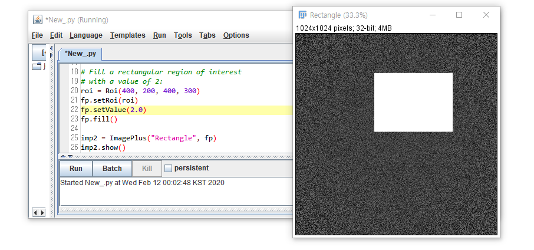

8. Region of Interest: 관심영역
- 포토샵 등에서 이미지를 처리할 때, 대부분 특정 부분을 선택하여 처리합니다.
- 눈을 키운다던가, 볼 터치를 화사하게 한다던가, 보기 싫은 뾰루지를 지우던가 하죠.
- 이렇게 이미지 프로세싱을 적용할 특정 영역을 관심영역(
ROI: Region of Interest)라고 합니다. - ImageJ에서는 ROI를 설정하고 편집하고 관리하는 기능을 많이 제공합니다.
- 뭐 이렇게 많아? 싶을 정도의 기능이 있습니다만 다른 기능들에 묻혀서 잘 안보입니다.
- 대부분 ROI 설정은 이미지를 보면서 interactive하게 진행되는 만큼 GUI 기반으로 설명하겠습니다.
- 아마도 포토샵과 MS Office 등에서 비슷한 기능을 다루어 보셨을 겁니다.
- ROI는 Region of Interest 외에도 Return of Invest의 약어로 사용되기도 합니다.
- 주로 경영 관련된 자료에서 투자회수 기간은 얼마인지, 투자회수 효율은 얼마인지 표시하는 지표입니다.
- 분야에 따라 저 ROI가 이 ROI보다 훨씬 많이 쓰이기도 하니, 헷갈리지 않도록 합시다.
- Reference*
ImageJ User Guide #10. Selections
ImageJ User Guide #28.2.4. Threshold…
ImageJ Fiji Auto Threshold
Hitachi TEM HF-3300
A Fiji Scripting Tutorial #3. Inspecting properties and pixels of an image
ij.gui.Roi
ImageJ Analyze Menu
8.1. ROI 하나씩 설정하기
- File > Open Samples > Blob을 엽니다.
- ROI를 선택하는 방법은 여러 가지가 있습니다.
8.1.1. ROI 잡기
ImageJ는 2D, 1D, 0D ROI를 지원합니다.
- 2D ROI의 기본 도형은 사각형(Rectangle), 원형(Oval), 다각형(Polygon), 자유곡선(Freehand)이 있습니다.
- 1D ROI의 기본 도형은 선(Line)입니다.
- 0D ROI의 기본 도형은 점(Point)입니다.

기본 도형 외에도 다른 도형들을 지원합니다. 우클릭 후 추가 도형을 선택할 수 있습니다.
Rectangle:Rounded Rectangle,Rotated RectangleOval:Ellipse,Selection Brush Tool(Brush Tool은 곧 다뤄보겠습니다.)Straight Line:Segmented Line,Freehand Line,Arrow Tool
(Arrow Tool은 Overlay를 다룰 때 자세히 설명하겠습니다.)Point:Multi-Point
도형을 만들 때 사용되는 보조키를 MS office와 동일하게 사용할 수 있습니다.
shift키는 가로세로 비율을 1:1로 유지합니다 - 정사각형, 원을 그릴 때 유용합니다.Line Selection에서shift키는 선을 45도 간격으로만 움직일 수 있게 해 줍니다.ctrl키는 최초 클릭 지점을 중심으로 도형을 그릴 수 있도록 해 줍니다.
도형을 추가하고 빼는 것도 MS office와 동일합니다.
shift키를 누르고 새로운 도형을 선택하면 추가됩니다.alt키를 누르고 도형을 겹치면 그 만큼이 빠집니다.- 선택영역을 마우스로 잡거나 키보드의 화살표 키를 이용해서 이동시킬 수 있습니다.
Rectangle,Oval,Polygon으로 만든 Selection은 꼭지점을 하나하나 잡아 수정할 수 있습니다.- Edit > Selection > ROI Manager…를 이용해 관리하고 수정할 수 있습니다.
(ROI 관리 부분에서 자세하게 설명하겠습니다)
Selection Brush Tool을 이용해서 편하게 관심영역을 수정할 수 있습니다.Oval에서 우클릭을 하여Selection Brush Tool을 선택합니다.- 이미지 위에서
shift키를 누르고 드래그를 하면 선택 영역을 추가하고, alt키를 누르고 드래그를 하면 선택 영역을 해제할 수 있습니다.Selection Brush Tool을 더블클릭하면 Brush 크기를 조절할 수 있습니다.
8.1.2. ROI 분석
- ImageJ의 ROI 기능을 이미지 분석에 적용해 보겠습니다.
- 원본 파일은 Hitachi TEM 이미지입니다: [다운로드]
- 분석 목표는 반도체 구조인 FinFET 산화층(oxide layer) 두께 측정이며, 실제 현업에서 매우 중요한 데이터입니다.
- 8.1.1.에서 설명하지 않고 넘어간 기능들도 활용하며 함께 설명하겠습니다.
1. 이미지 우측 하단의 scale bar를 이용하여 calibration을 수행합니다.
- 본 블로그 ImageJ > Cookbook > 2. Image Calibration중간에 있는 2.3.1. Spatial Calibration (GUI)을 활용합니다.
- scale bar의 실제 길이는 10 nm 이므로 Known distance에 10을, Unit of length에 nm를 입력합니다.
2. 두께 측정 방법을 결정합니다.
- 우리가 측정할 산화층은 내부와 외부의 경계가 명확하지 않습니다.
- 내부에는 실리콘(Si) 결정질이 격자무늬를 나타내고 있고, 외부에도 산화물 기반 유전체 박막이 있어 역시 뭉글뭉글합니다.
- 오차를 줄이기 위해 몇 곳의 두께를 재서 평균을 내기도 하지만 우리는 다른 방법을 써보려고 합니다.
- 넓이 ÷ 길이 = 두께 공식을 이용하겠습니다.
- 결정질을 둘러싼 산화층의 ∩ 모양 길이와 넓이를 각각 구해서 나눌 예정입니다.
3. 산화층의 길이를 구합니다.
3-1. Straight Line에서 우클릭을 해서 Segmented Line을 선택합니다.
3-2. 산화막의 중심을 따라 클릭을 반복하며 선을 이어줍니다. 마지막엔 처음 지점을 클릭하여 마무리합니다.
3-3. 딱딱한 꺾인선을 spline으로 부드럽게 만들어줍니다. Edit > Selection > Fit Spline을 눌러줍니다.
3-4. 측정 항목을 설정합니다. Analyze > Set Measurements에서 Perimenter만 남기고 OK를 눌러줍니다.
3-5. 길이를 잽니다. Analyze > Measure를 눌러줍니다. 단축키는 ctrl + M입니다.
- 산화층의 길이가 60.300 nm 로 측정되었습니다.
4. 산화층의 넓이를 구합니다.
4-1. Oval에서 우클릭을 해서 Selection Brush Tool을 선택합니다.
4-2. 산화층을 따라 칠을 하면서 산화층 영역을 선택합니다.
4-3. 빠진 곳이 있으면 shift키를 누르고 덧칠합니다. 잘못 칠해진 곳이 있으면 alt키를 누르고 빼줍니다.
4-4. 정밀한 터치가 필요하면 Selection Brush Tool을 더블클릭해서 brush size를 조절합니다.
4-5. 측정 항목을 설정합니다. Analyze > Set Measurements에서 Area만 남기고 OK를 눌러줍니다.
4-6. 넓이를 잽니다. Analyze > Measure를 눌러줍니다. 단축키는 ctrl + M입니다.
- 산화층의 넓이가 66.351 nm 로 측정되었습니다.
5. 산화층의 두께를 구합니다.
- 두께 = 넓이 ÷ 길이 = 66.351 ÷ 60.300 = 1.1 nm로 측정되었습니다.
8.2. ROI 한번에 잡기
- Brightness 등 기준을 이용해 이미지 곳곳의 ROI를 한번에 설정할 수 있습니다.
8.2.1. Threshold
- 이미지의 brightness를 기준으로 histogram을 그리고, 특정 선 이상 또는 이하의 pixel을 선택합니다.
- File > Open Samples > Blob을 엽니다.
- Image > Adjust > Threshold…를 선택합니다. 단축키는
ctrl + shift + T입니다. Dark background가 기본으로 선택되어 있기 때문에 threshold값인 125 이하 영역이 붉게 표시되어 있습니다.
1. Threshold를 Selection으로 변환
- Edit > Selection > Create Selection을 실행하면 붉게 표시된 영역이 Selection으로 변환됩니다.
- Threshold 창의 Reset을 클릭하면 Threshold는 해제되고 Selection만 남습니다.
2. Threshold 선택영역 수정
- Threshold창을 조작해서 선택 영역을 조정할 수 있습니다.
Threshold 창의 각 기능은 위 그림과 같습니다. [원본링크]
Upper Slider : Threshold의 최소값을 조정합니다.
shift키를 누른 채로 조정하면 상단 Highlight 영역 전체가 움직입니다.Lower Slider ] : Threshold의 최대값을 조정합니다.
Method : Auto Thresholding method를 선택합니다.
method에 따른 threshold 결과를 아래 정리했습니다. [레퍼런스]Display : Threshold 영역 표시 방법을 선택합니다.
- Red : Threshold 영역을 붉은 색으로 표시
- B&W : Threshold 영역(Feature)를 검정색으로 표시, background를 하얀색으로 표시.
- Over/Under : Threshold 최소값 미만을 파란색, Threshold 영역을 회색, 최대값 이상을 녹색으로 표시.
Dark background : Feature가 Background보다 밝으면 체크됩니다. 해제해서 반전시킬 수 있습니다.
Stack Histogram : Stack Image에 Threshold 적용시, 여기를 체크하면 모든 stack data를 분석하여 histogram을 그리고 global threshold를 계산합니다. 체크 해제시 각 layer별로 별도의 threshold를 적용합니다.
Auto : 선택된 method를 이용해 threshold level을 자동으로 설정합니다.
Apply : Threshold 영역을 Black으로, 나머지 영역을 White로 설정합니다.
32-bit float이미지의 경우NaN Background(Process > Math > NaN Background)가 적용됩니다.Reset : Threshold를 취소하고 Histogram을 업데이트합니다.
Set : Threshold의 최소값과 최소값을 새로 입력합니다.

8.2.2. Wand Tool
- 포토샵의 마술봉과 같은 역할을 합니다.
- Wand Tool을 선택하고 이미지의 한 부분을 클릭하면,
해당 부분의밝기 ± tolerance에 해당하면서 연결된 영역을 자동으로 선택합니다. - Mode :
- 4-connected : 상하좌우로 인접한 픽셀들을 연결된 것으로 인식.
- 8-connected : 대각선으로 인접한 픽셀들까지 연결된 것으로 인식.
- Legacy : 공식문서에는 neighbor도 tolerance도 적용되지 않는다고 하지만 실제 Legacy 모드를 적용하고 tolerance를 조정하면 ROI가 바뀌는 것을 볼 수 있습니다.
8.3. ROI 부분 이미지 편집
- 8.1.1.에서 ROI 영역을 분석했습니다.
- 포토샵에서 그렇듯 ImageJ에서도 ROI를 편집할 수 있습니다.
8.3.1. ROI 편집 (GUI)
File > Open Samples > Blob을 엽니다.
Wand Tool을 더블클릭해서 설정에 들어가 Tolerance = 100을 입력합니다.
shift키를 누르고 이미지의 검정 부분 몇 개를 선택합니다.shift키를 누르고Rectangle을 선택해서 흰색 배경을 포함한 영역을 설정합니다.선택된 영역에 색을 칠하고 윤곽선을 그려보겠습니다.
Edit > Option > Colors…에서 Foreground를 white, Background를 gray로 설정합니다.
채색(Fill)을 위해
ctrl + F를 입력합니다. Foreground(흰색)으로 칠해진 것을 볼 수 있습니다.지우기(Clear)을 위해
delete를 입력합니다. Background(화색)으로 칠해진 것을 볼 수 있습니다.그리기(Draw)를 위해
ctrl + D를 입력합니다. 선택을 해제(ctrl + shift + A)하면 하얀 선이 보입니다.
8.3.2. 이미지 작성 & ROI 편집 (python script)
- python script로도 ROI를 편집할 수 있음을 보이기 위해 간단한 예를 작성해 보겠습니다.
8.3.2.1. 밑바닥부터 이미지 작성
- ImageJ 이미지는 세 가지 요소로 이루어져 있습니다.
1. pixel array : pixel intensity value
2. ImageProcessor : pixel array를 붙들ImageProcessorclass
3. ImagePlus :ImageProcessor인스턴스를 붙들ImagePlus인스턴스 - 0~1 사이의 랜덤 값으로 채워진 1024 x 1024 이미지를 생성합니다.
1
2
3
4
5
6
7
8
9
10
11
12
13
14
15
16from ij import ImagePlus
from ij.process import FloatProcessor
from array import zeros
from random import random
width = 1024
height = 1024
pixels = zeros('f', width * height) # float 형식의 0을 채운 pixel array
for i in xrange(len(pixels)): # pixel array에 random value 입력
pixels[i] = random()
fp = FloatProcessor(width, height, pixels, None) # ImageProcessor 생성
imp = ImagePlus("White noise", fp) # ImageProcessor로 ImagePlus 생성
imp.show()- 실행화면
- 실행화면
8.3.2.2. Rectangle ROI 설정, 이미지 편집
- ImageJ python script에서 ROI를 제어하기 위해
ij.gui의Roi모듈이 필요합니다.Roi는(int x, int y, int width, int height)를 받아들여 ROI를 내놓는 Method입니다.- 유사하게,
PolygonRoi,OvalRoi,ShapeRoi등을 사용할 수 있습니다. FloatProcessor는 상위클래스인ImageProcessor에서 상속받은setRoi()Method가 있습니다.- 마지막으로
setValue()와fill()을 이용해 사각형을 칠합니다.
- 위 명령을 차례로 실행하는 코드는 다음과 같습니다.
1
2
3
4
5
6
7
8
9
10
11
12
13
14
15
16
17
18
19
20
21
22
23
24
25from ij import ImagePlus
from ij.process import FloatProcessor
from array import zeros
from random import random
from ij.gui import Roi
width = 1024
height = 1024
pixels = zeros('f', width * height) # float 형식의 0을 채운 pixel array
for i in xrange(len(pixels)): # pixel array에 random value 입력
pixels[i] = random()
fp = FloatProcessor(width, height, pixels, None) # ImageProcessor 생성
imp = ImagePlus("White noise", fp) # ImageProcessor로 ImagePlus 생성
# 직사각형 관심영역(ROI: Region of Interest)를 2로 채우기
fp = FloatProcessor(width, height, pixels, None)
roi = Roi(400, 200, 400, 300) # Roi(int x, int y, int width, int height)
fp.setRoi(roi)
fp.setValue(2.0)
fp.fill()
imp2 = ImagePlus("Rectangle", fp)
imp2.show()- 실행화면

- 실행화면
8.3.2.3. Polygon ROI 설정, 이미지 편집
Polygon ROI는 Rectangle ROI에 비해 딱 두 개가 다릅니다.
import PolygonRoi를 해야 하고,Roi()대신PolygonRoi()를 사용해야 합니다.- 하나 덧붙이자면
PolygonRoi()에 넣을 Polygon의 x좌표와 y좌표 array가 필요합니다.
8.3.2.2. 코드에서 해당 부분을 수정해서 넣으면 다음과 같이 됩니다.
1
2
3
4
5
6
7
8
9
10
11
12
13
14
15
16
17
18
19
20
21
22
23
24
25
26
27
28
29
30
31
32
33
34from ij import ImagePlus
from ij.process import FloatProcessor
from array import zeros
from random import random
from ij.gui import Roi, PolygonRoi
width = 1024
height = 1024
pixels = zeros('f', width * height) # float 형식의 0을 채운 pixel array
for i in xrange(len(pixels)): # pixel array에 random value 입력
pixels[i] = random()
fp = FloatProcessor(width, height, pixels, None) # ImageProcessor 생성
imp = ImagePlus("White noise", fp) # ImageProcessor로 ImagePlus 생성
# Polygon ROI를 -3으로 채우기
fp = FloatProcessor(width, height, pixels, None)
xs = [234, 174, 162, 102, 120, 123, 153, 177, 171,
60, 0, 18, 63, 132, 84, 129, 69, 174, 150,
183, 207, 198, 303, 231, 258, 234, 276, 327,
378, 312, 228, 225, 246, 282, 261, 252]
ys = [48, 0, 60, 18, 78, 156, 201, 213, 270, 279,
336, 405, 345, 348, 483, 615, 654, 639, 495,
444, 480, 648, 651, 609, 456, 327, 330, 432,
408, 273, 273, 204, 189, 126, 57, 6]
proi = PolygonRoi(xs, ys, len(xs), Roi.POLYGON) # PolygonRoi(float[] xPoints, float[] yPoints, int nPoints, int type)
fpp = fp
fpp.setRoi(proi)
fpp.setValue(-3)
fpp.fill(proi.getMask())
imp3 = ImagePlus("Polygon", fpp)
imp3.show()- 실행화면
- 실행화면
8.3.2.4. 세 그림 비교
- 위에서 그린 세 그림은 0~1 범위의 random value를 바탕에 깔고 있습니다.
- 그러나 셋을 나란히 놓고 보면 배경의 명도가 다릅니다.
- 명도가 명백히 다름에도 불구하고 세 그림의 전체 영역을 ROI로 잡고(
ctrl + A) Measure를 수행한 결과로부터 입력한 숫자가 그대로임을 알 수 있는데, pixel value에 무관하게 min-max 값으로 black-white 로 변환해서 보여주는32-bit Grayscale의 특징입니다.